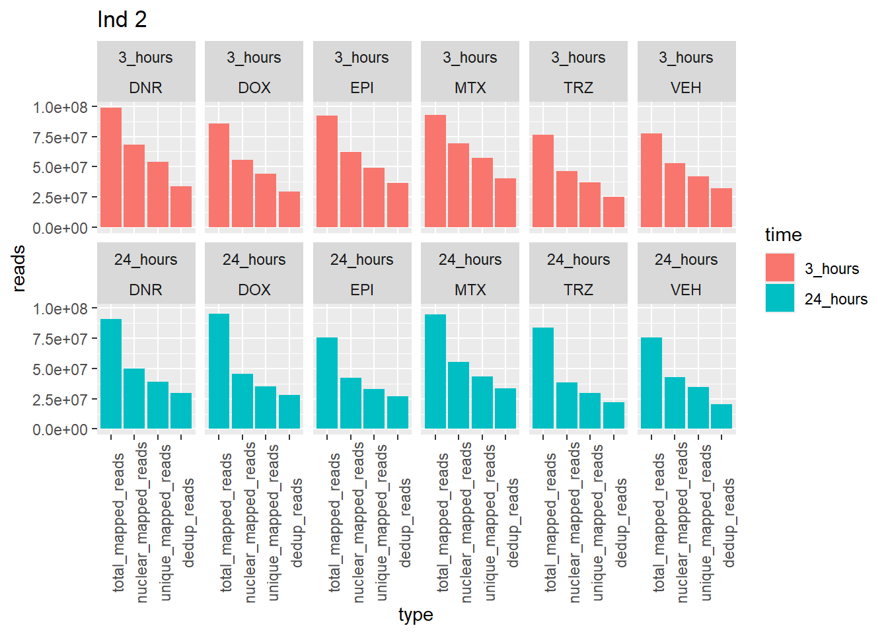
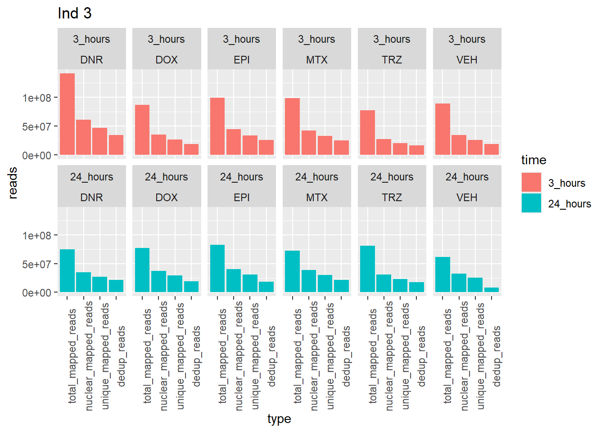
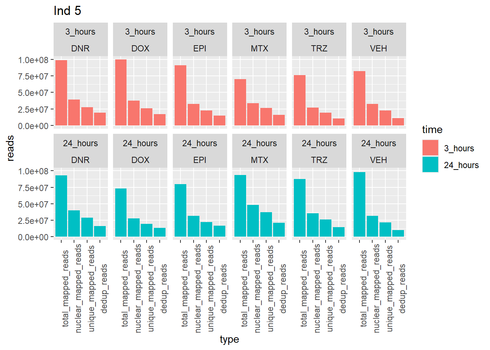

ATAC_fastqc
ERM
2025-05-01
Last updated: 2025-05-01
Checks: 7 0
Knit directory: ATAC_learning/
This reproducible R Markdown analysis was created with workflowr (version 1.7.1). The Checks tab describes the reproducibility checks that were applied when the results were created. The Past versions tab lists the development history.
Great! Since the R Markdown file has been committed to the Git repository, you know the exact version of the code that produced these results.
Great job! The global environment was empty. Objects defined in the global environment can affect the analysis in your R Markdown file in unknown ways. For reproduciblity it’s best to always run the code in an empty environment.
The command set.seed(20231016) was run prior to running
the code in the R Markdown file. Setting a seed ensures that any results
that rely on randomness, e.g. subsampling or permutations, are
reproducible.
Great job! Recording the operating system, R version, and package versions is critical for reproducibility.
Nice! There were no cached chunks for this analysis, so you can be confident that you successfully produced the results during this run.
Great job! Using relative paths to the files within your workflowr project makes it easier to run your code on other machines.
Great! You are using Git for version control. Tracking code development and connecting the code version to the results is critical for reproducibility.
The results in this page were generated with repository version ba4d3e0. See the Past versions tab to see a history of the changes made to the R Markdown and HTML files.
Note that you need to be careful to ensure that all relevant files for
the analysis have been committed to Git prior to generating the results
(you can use wflow_publish or
wflow_git_commit). workflowr only checks the R Markdown
file, but you know if there are other scripts or data files that it
depends on. Below is the status of the Git repository when the results
were generated:
Ignored files:
Ignored: .RData
Ignored: .Rhistory
Ignored: .Rproj.user/
Ignored: data/ACresp_SNP_table.csv
Ignored: data/ARR_SNP_table.csv
Ignored: data/All_merged_peaks.tsv
Ignored: data/CAD_gwas_dataframe.RDS
Ignored: data/CTX_SNP_table.csv
Ignored: data/Collapsed_expressed_NG_peak_table.csv
Ignored: data/DEG_toplist_sep_n45.RDS
Ignored: data/FRiP_first_run.txt
Ignored: data/Final_four_data/
Ignored: data/Frip_1_reads.csv
Ignored: data/Frip_2_reads.csv
Ignored: data/Frip_3_reads.csv
Ignored: data/Frip_4_reads.csv
Ignored: data/Frip_5_reads.csv
Ignored: data/Frip_6_reads.csv
Ignored: data/GO_KEGG_analysis/
Ignored: data/HF_SNP_table.csv
Ignored: data/Ind1_75DA24h_dedup_peaks.csv
Ignored: data/Ind1_TSS_peaks.RDS
Ignored: data/Ind1_firstfragment_files.txt
Ignored: data/Ind1_fragment_files.txt
Ignored: data/Ind1_peaks_list.RDS
Ignored: data/Ind1_summary.txt
Ignored: data/Ind2_TSS_peaks.RDS
Ignored: data/Ind2_fragment_files.txt
Ignored: data/Ind2_peaks_list.RDS
Ignored: data/Ind2_summary.txt
Ignored: data/Ind3_TSS_peaks.RDS
Ignored: data/Ind3_fragment_files.txt
Ignored: data/Ind3_peaks_list.RDS
Ignored: data/Ind3_summary.txt
Ignored: data/Ind4_79B24h_dedup_peaks.csv
Ignored: data/Ind4_TSS_peaks.RDS
Ignored: data/Ind4_V24h_fraglength.txt
Ignored: data/Ind4_fragment_files.txt
Ignored: data/Ind4_fragment_filesN.txt
Ignored: data/Ind4_peaks_list.RDS
Ignored: data/Ind4_summary.txt
Ignored: data/Ind5_TSS_peaks.RDS
Ignored: data/Ind5_fragment_files.txt
Ignored: data/Ind5_fragment_filesN.txt
Ignored: data/Ind5_peaks_list.RDS
Ignored: data/Ind5_summary.txt
Ignored: data/Ind6_TSS_peaks.RDS
Ignored: data/Ind6_fragment_files.txt
Ignored: data/Ind6_peaks_list.RDS
Ignored: data/Ind6_summary.txt
Ignored: data/Knowles_4.RDS
Ignored: data/Knowles_5.RDS
Ignored: data/Knowles_6.RDS
Ignored: data/LiSiLTDNRe_TE_df.RDS
Ignored: data/MI_gwas.RDS
Ignored: data/SNP_GWAS_PEAK_MRC_id
Ignored: data/SNP_GWAS_PEAK_MRC_id.csv
Ignored: data/SNP_gene_cat_list.tsv
Ignored: data/SNP_supp_schneider.RDS
Ignored: data/TE_info/
Ignored: data/TFmapnames.RDS
Ignored: data/all_TSSE_scores.RDS
Ignored: data/all_four_filtered_counts.txt
Ignored: data/aln_run1_results.txt
Ignored: data/anno_ind1_DA24h.RDS
Ignored: data/anno_ind4_V24h.RDS
Ignored: data/annotated_gwas_SNPS.csv
Ignored: data/background_n45_he_peaks.RDS
Ignored: data/cardiac_muscle_FRIP.csv
Ignored: data/cardiomyocyte_FRIP.csv
Ignored: data/col_ng_peak.csv
Ignored: data/cormotif_full_4_run.RDS
Ignored: data/cormotif_full_4_run_he.RDS
Ignored: data/cormotif_full_6_run.RDS
Ignored: data/cormotif_full_6_run_he.RDS
Ignored: data/cormotif_probability_45_list.csv
Ignored: data/cormotif_probability_45_list_he.csv
Ignored: data/cormotif_probability_all_6_list.csv
Ignored: data/cormotif_probability_all_6_list_he.csv
Ignored: data/datasave.RDS
Ignored: data/embryo_heart_FRIP.csv
Ignored: data/enhancer_list_ENCFF126UHK.bed
Ignored: data/enhancerdata/
Ignored: data/filt_Peaks_efit2.RDS
Ignored: data/filt_Peaks_efit2_bl.RDS
Ignored: data/filt_Peaks_efit2_n45.RDS
Ignored: data/first_Peaksummarycounts.csv
Ignored: data/first_run_frag_counts.txt
Ignored: data/full_bedfiles/
Ignored: data/gene_ref.csv
Ignored: data/gwas_1_dataframe.RDS
Ignored: data/gwas_2_dataframe.RDS
Ignored: data/gwas_3_dataframe.RDS
Ignored: data/gwas_4_dataframe.RDS
Ignored: data/gwas_5_dataframe.RDS
Ignored: data/high_conf_peak_counts.csv
Ignored: data/high_conf_peak_counts.txt
Ignored: data/high_conf_peaks_bl_counts.txt
Ignored: data/high_conf_peaks_counts.txt
Ignored: data/hits_files/
Ignored: data/hyper_files/
Ignored: data/hypo_files/
Ignored: data/ind1_DA24hpeaks.RDS
Ignored: data/ind1_TSSE.RDS
Ignored: data/ind2_TSSE.RDS
Ignored: data/ind3_TSSE.RDS
Ignored: data/ind4_TSSE.RDS
Ignored: data/ind4_V24hpeaks.RDS
Ignored: data/ind5_TSSE.RDS
Ignored: data/ind6_TSSE.RDS
Ignored: data/initial_complete_stats_run1.txt
Ignored: data/left_ventricle_FRIP.csv
Ignored: data/median_24_lfc.RDS
Ignored: data/median_3_lfc.RDS
Ignored: data/mergedPeads.gff
Ignored: data/mergedPeaks.gff
Ignored: data/motif_list_full
Ignored: data/motif_list_n45
Ignored: data/motif_list_n45.RDS
Ignored: data/multiqc_fastqc_run1.txt
Ignored: data/multiqc_fastqc_run2.txt
Ignored: data/multiqc_genestat_run1.txt
Ignored: data/multiqc_genestat_run2.txt
Ignored: data/my_hc_filt_counts.RDS
Ignored: data/my_hc_filt_counts_n45.RDS
Ignored: data/n45_bedfiles/
Ignored: data/n45_files
Ignored: data/other_papers/
Ignored: data/peakAnnoList_1.RDS
Ignored: data/peakAnnoList_2.RDS
Ignored: data/peakAnnoList_24_full.RDS
Ignored: data/peakAnnoList_24_n45.RDS
Ignored: data/peakAnnoList_3.RDS
Ignored: data/peakAnnoList_3_full.RDS
Ignored: data/peakAnnoList_3_n45.RDS
Ignored: data/peakAnnoList_4.RDS
Ignored: data/peakAnnoList_5.RDS
Ignored: data/peakAnnoList_6.RDS
Ignored: data/peakAnnoList_Eight.RDS
Ignored: data/peakAnnoList_full_motif.RDS
Ignored: data/peakAnnoList_n45_motif.RDS
Ignored: data/siglist_full.RDS
Ignored: data/siglist_n45.RDS
Ignored: data/summarized_peaks_dataframe.txt
Ignored: data/summary_peakIDandReHeat.csv
Ignored: data/test.list.RDS
Ignored: data/testnames.txt
Ignored: data/toplist_6.RDS
Ignored: data/toplist_full.RDS
Ignored: data/toplist_full_DAR_6.RDS
Ignored: data/toplist_n45.RDS
Ignored: data/trimmed_seq_length.csv
Ignored: data/unclassified_full_set_peaks.RDS
Ignored: data/unclassified_n45_set_peaks.RDS
Ignored: data/xstreme/
Untracked files:
Untracked: analysis/Expressed_RNA_associations.Rmd
Untracked: analysis/LFC_corr.Rmd
Untracked: analysis/SVA.Rmd
Untracked: analysis/Tan2020.Rmd
Untracked: analysis/my_hc_filt_counts.csv
Untracked: code/IGV_snapshot_code.R
Untracked: code/LongDARlist.R
Untracked: code/just_for_Fun.R
Untracked: output/cormotif_probability_45_list.csv
Untracked: output/cormotif_probability_all_6_list.csv
Untracked: setup.RData
Unstaged changes:
Modified: ATAC_learning.Rproj
Modified: analysis/Correlation_of_SNPnPEAK.Rmd
Modified: analysis/GO_KEGG_analysis.Rmd
Modified: analysis/Odds_ratios_ff.Rmd
Modified: analysis/Raodah_mycount.Rmd
Modified: analysis/TE_analysis_ff.Rmd
Modified: analysis/final_plot_attempt.Rmd
Note that any generated files, e.g. HTML, png, CSS, etc., are not included in this status report because it is ok for generated content to have uncommitted changes.
These are the previous versions of the repository in which changes were
made to the R Markdown (analysis/Fastqc_results.Rmd) and
HTML (docs/Fastqc_results.html) files. If you’ve configured
a remote Git repository (see ?wflow_git_remote), click on
the hyperlinks in the table below to view the files as they were in that
past version.
| File | Version | Author | Date | Message |
|---|---|---|---|---|
| Rmd | ba4d3e0 | reneeisnowhere | 2025-05-01 | updates to webpage |
| Rmd | 9f3ac8f | reneeisnowhere | 2024-06-25 | after updates |
| html | d4db64b | reneeisnowhere | 2024-03-11 | Build site. |
| Rmd | cca2022 | reneeisnowhere | 2024-03-11 | updates to reads graphs |
| Rmd | 2910c4d | reneeisnowhere | 2024-03-06 | updates to code |
| html | de853f8 | reneeisnowhere | 2024-03-06 | Build site. |
| Rmd | 60c7f41 | reneeisnowhere | 2024-03-06 | updates to number of reads and summaries |
| html | 1f95eb9 | reneeisnowhere | 2024-02-19 | Build site. |
| Rmd | 82d757c | reneeisnowhere | 2024-02-19 | adding in fragment length |
| html | 3e9762b | reneeisnowhere | 2024-01-30 | Build site. |
| Rmd | 778ce47 | reneeisnowhere | 2024-01-30 | adding more graphs |
| html | dce7d59 | reneeisnowhere | 2024-01-30 | Build site. |
| html | 83c0d79 | reneeisnowhere | 2024-01-30 | Build site. |
| Rmd | ccb3f28 | reneeisnowhere | 2024-01-30 | first updates |
library(tidyverse)
# library(ggsignif)
# library(cowplot)
# library(ggpubr)
# library(scales)
# library(sjmisc)
library(kableExtra)
# library(broom)
# library(biomaRt)
library(RColorBrewer)
# library(gprofiler2)
# library(qvalue)Total Sequences before mapping
This code takes the multiqc fastqc output file and: splits by rows to trimmed and non trimmed, then separates the trimmed file names into categories I want, then adds back in the non trimmed data rows (while also splitting file name like the trimmed file name). after rbind, I split treatmenttime by position, fix the names of the time column, remove numbers from trt column, add a new column called “trimmed” where I add in a vector that lets me group by trimmed file verses non trimmed file, the select only those columns containing the columns I want to keep.
multiqc_fastqc2 <- read_csv("data/multiqc_fastqc_run2.txt")
multiqc_general_stats2 <- read_csv("data/multiqc_genestat_run2.txt")
fastqc_full <- multiqc_fastqc2 %>%
slice_tail(n=144) %>%
separate(Filename, into = c(NA,"ind","treatmenttime",NA,"read")) %>%
rbind(., (multiqc_fastqc2 %>% slice_head(n=144) %>% separate(Filename, into = c("ind","treatmenttime",NA,"read")))) %>%
separate_wider_position(., col =treatmenttime,c(2,trt=2,time=3),too_few = "align_start") %>%
mutate(time=case_match(trt,"E2"~"24h","E3"~"3h","M2"~"24h", "M3"~"3h","T2"~"24h","T3"~"3h","V2"~"24h","V3"~"3h",.default = time)) %>%
mutate(trt=gsub("[[:digit:]]", "", trt) ) %>%
mutate(trimmed = if_else(grepl(pattern ="^trim", x = Sample)==TRUE, "yes","no")) %>%
dplyr::select(Sample:read, trimmed,`Total Sequences`:avg_sequence_length) %>%
full_join(., multiqc_general_stats2, join_by(Sample)) %>%
dplyr::rename("percent_gc"="FastQC_mqc-generalstats-fastqc-percent_gc",
"avg_seq_len"= "FastQC_mqc-generalstats-fastqc-avg_sequence_length",
"percent_dup"= "FastQC_mqc-generalstats-fastqc-percent_duplicates",
"percent_fails"= "FastQC_mqc-generalstats-fastqc-percent_fails",
"total_sequences"= "FastQC_mqc-generalstats-fastqc-total_sequences") %>%
mutate(ind = factor(ind, levels = c("Ind1", "Ind2", "Ind3", "Ind4", "Ind5", "Ind6"))) %>%
mutate(time = factor(time, levels = c("3h", "24h"), labels= c("3 hours","24 hours"))) %>%
mutate(trt = factor(trt, levels = c("DX","E", "DA","M", "T", "V"), labels = c("DOX","EPI", "DNR", "MTX", "TRZ", "VEH"))) (in this case, Sample, ind, trt, time read, trimmed, Total sequences, Flagged poor quality, sequence length, %GC,total deduplicated %,and avg sequence length) I also then addin the gen_stats file and rename the columns to normal things.
# fastqc_full
drug_pal <- c("#8B006D","#DF707E","#F1B72B", "#3386DD","#707031","#41B333")
drug_pal_fac <- c("#8B006D","#DF707E","#F1B72B", "#3386DD","#707031","#41B333")
fastqc_full %>%
filter(trimmed=="no") %>%
ggplot(., aes(x=trt, y= `Total Sequences`))+
geom_col(aes(fill= trt))+
facet_wrap(ind~time)+
scale_fill_manual(values=drug_pal)+
theme_bw()+
ggtitle("Total Sequences, untrimmed")+
# ylab(ylab)+
xlab("")+
theme(strip.background = element_rect(fill = "white",linetype=1, linewidth = 0.5),
plot.title = element_text(size=14,hjust = 0.5,face="bold"),
axis.title = element_text(size = 10, color = "black"),
axis.ticks = element_line(linewidth = 0.5),
axis.line = element_line(linewidth = 0.5),
axis.text.x = element_blank(),
strip.text.x = element_text(margin = margin(2,0,2,0, "pt"),face = "bold"))
| Version | Author | Date |
|---|---|---|
| 83c0d79 | reneeisnowhere | 2024-01-30 |
fastqc_full %>%
filter(trimmed=="yes") %>%
ggplot(., aes(x=trt, y= `Total Sequences`))+
geom_col(aes(fill= trt))+
facet_wrap(ind~time)+
scale_fill_manual(values=drug_pal)+
theme_bw()+
ggtitle("Total Sequences, trimmed")+
# ylab(ylab)+
xlab("")+
theme(strip.background = element_rect(fill = "white",linetype=1, linewidth = 0.5),
plot.title = element_text(size=14,hjust = 0.5,face="bold"),
axis.title = element_text(size = 10, color = "black"),
axis.ticks = element_line(linewidth = 0.5),
axis.line = element_line(linewidth = 0.5),
axis.text.x = element_blank(),
strip.text.x = element_text(margin = margin(2,0,2,0, "pt"),face = "bold"))
| Version | Author | Date |
|---|---|---|
| 83c0d79 | reneeisnowhere | 2024-01-30 |
totseq <- fastqc_full %>%
dplyr::filter(read =='R1') %>%
# group_by(ind,trt,time) %>%
dplyr::select(Sample, ind, trt, time, trimmed, `Total Sequences`) %>%
pivot_wider(id_cols = c(ind,trt,time), names_from = trimmed, values_from = `Total Sequences`) %>%
mutate(perc_removed=(no-yes)/no*100) #%>%
# kable(list(totseq[1:36,], totseq[37:72,]),caption= "Summary of Total sequences before and after trimming, with percentage of removed sequences") %>%
# kable_paper("striped", full_width = FALSE) %>%
# kable_styling(full_width = FALSE,font_size = 18) #%>%
# # scroll_box(width = "100%", height = "400px")
totseq %>%
ggplot(.,aes(x=trt,y=perc_removed) )+
geom_col(aes(fill= trt))+
facet_wrap(ind~time)+
scale_fill_manual(values=drug_pal)+
theme_bw()+
ggtitle("Total Sequences, percent removed")+
# ylab(ylab)+
xlab("")+
theme(strip.background = element_rect(fill = "white",linetype=1, linewidth = 0.5),
plot.title = element_text(size=14,hjust = 0.5,face="bold"),
axis.title = element_text(size = 10, color = "black"),
axis.ticks = element_line(linewidth = 0.5),
axis.line = element_line(linewidth = 0.5),
axis.text.x = element_blank(),
strip.text.x = element_text(margin = margin(2,0,2,0, "pt"),face = "bold"))
| Version | Author | Date |
|---|---|---|
| 83c0d79 | reneeisnowhere | 2024-01-30 |
##Average sequence length
fastqc_full %>%
filter(trimmed=="no") %>%
mutate(avg_sequence_length=as.numeric(avg_sequence_length)) %>%
ggplot(., aes(x=read, y= avg_seq_len))+
geom_boxplot(aes(fill= trt))+
facet_wrap(ind~time)+
scale_fill_manual(values=drug_pal)+
theme_bw()+
# ylim(0,55)+
ggtitle("Average sequence length, untrimmed")+
# ylab(ylab)+
# xlab("")+
theme(strip.background = element_rect(fill = "white",linetype=1, linewidth = 0.5),
plot.title = element_text(size=14,hjust = 0.5,face="bold"),
axis.title = element_text(size = 10, color = "black"),
axis.ticks = element_line(linewidth = 0.5),
axis.line = element_line(linewidth = 0.5),
# axis.text.x = element_blank(),
strip.text.x = element_text(margin = margin(2,0,2,0, "pt"),face = "bold"))
| Version | Author | Date |
|---|---|---|
| 3e9762b | reneeisnowhere | 2024-01-30 |
fastqc_full %>%
filter(trimmed=="yes") %>%
mutate(avg_sequence_length=as.numeric(avg_sequence_length)) %>%
ggplot(., aes(x=read, y= avg_seq_len))+
geom_boxplot(aes(col= trt))+
facet_wrap(ind~time)+
scale_fill_manual(values=drug_pal)+
scale_color_manual(values = drug_pal)+
theme_bw()+
ggtitle("Average sequence length, trimmed")+
# ylab(ylab)+
# xlab("")+
theme(strip.background = element_rect(fill = "white",linetype=1, linewidth = 0.5),
plot.title = element_text(size=14,hjust = 0.5,face="bold"),
axis.title = element_text(size = 10, color = "black"),
axis.ticks = element_line(linewidth = 0.5),
axis.line = element_line(linewidth = 0.5),
# axis.text.x = element_blank(),
strip.text.x = element_text(margin = margin(2,0,2,0, "pt"),face = "bold"))
| Version | Author | Date |
|---|---|---|
| 3e9762b | reneeisnowhere | 2024-01-30 |
fastqc_full %>%
filter(trimmed=="no") %>%
group_by(trt) %>%
# mutate(avg_sequence_length=as.numeric(avg_sequence_length)) %>%
ggplot(., aes(x=read, y= percent_dup))+
geom_col(position= "dodge",aes(fill= trt))+
geom_text(aes(group=trt,label = sprintf("%.1f",percent_dup)),
position=position_dodge(width =.95),angle= 90,vjust=.02, hjust=.7 )+
facet_wrap(ind~time)+
scale_fill_manual(values=drug_pal)+
theme_bw()+
# ylim(0,55)+
ggtitle("Percent duplicated, untrimmed")+
# ylab(ylab)+
# xlab("")+
theme(strip.background = element_rect(fill = "white",linetype=1, linewidth = 0.5),
plot.title = element_text(size=14,hjust = 0.5,face="bold"),
axis.title = element_text(size = 10, color = "black"),
axis.ticks = element_line(linewidth = 0.5),
axis.line = element_line(linewidth = 0.5),
# axis.text.x = element_blank(),
strip.text.x = element_text(margin = margin(2,0,2,0, "pt"),face = "bold"))
| Version | Author | Date |
|---|---|---|
| 3e9762b | reneeisnowhere | 2024-01-30 |
fastqc_full %>%
filter(trimmed=="yes") %>%
group_by(trt) %>%
# mutate(avg_sequence_length=as.numeric(avg_sequence_length)) %>%
ggplot(., aes(x=read, y= percent_dup))+
geom_col(position= "dodge",aes(fill= trt))+
geom_text(aes(group=trt,label = sprintf("%.1f",percent_dup)),
position=position_dodge(width =.95),angle= 90,vjust=.02, hjust=.7 )+
facet_wrap(ind~time)+
scale_fill_manual(values=drug_pal)+
theme_bw()+
theme(strip.background = element_rect(fill = "white",linetype=1, linewidth = 0.5),
plot.title = element_text(size=14,hjust = 0.5,face="bold"),
axis.title = element_text(size = 10, color = "black"),
axis.ticks = element_line(linewidth = 0.5),
axis.line = element_line(linewidth = 0.5),
# axis.text.x = element_blank(),
strip.text.x = element_text(margin = margin(2,0,2,0, "pt"),face = "bold"))
| Version | Author | Date |
|---|---|---|
| 3e9762b | reneeisnowhere | 2024-01-30 |
Trimmed sequence lengths
###omitted the first288 lines (this was a duplicate of the first multiqc run... changed files to iterate over in the furture)
trimmed_seq_length <- read.csv("data/trimmed_seq_length.csv", row.names = 1, col.names = 0:25)
# save <-
trimmed_seq_length <- trimmed_seq_length %>%
dplyr::rename( "0bp"=X0,"2bp"=X1,"4bp"=X2,"6bp"=X3,"8bp"=X4,"10bp"=X5,"12bp"=X6, "14bp"=X7, "16bp"=X8, "18bp"=X9, "20bp"=X10, "22bp"=X11, "24bp"=X12, "26bp"=X13, "28bp"=X14, "30bp"=X15, "32bp"=X16, "34bp"=X17, "36bp"=X18, "38bp"=X19, "40bp"=X20, "42bp"=X21, "44bp"=X22, "46bp"=X23, "48bp"=X24, "50bp"=X25)# %>%
# column_to_rownames("samples") %>% write.csv(.,"data/trimmed_seq_length.csv")
# t() %>%
# as.numeric()
# trimmed_seq_length %>%
# rownames_to_column("samples") %>%
# pivot_longer(., col=!samples, names_to = "frag_length", values_to = "counts")
#
#
#
# pivot_longer(everything(), names_to = "lelsngth", values_to ="counts")
# str(save)aln_results <- read.csv("data/aln_run1_results.txt", row.names = 1)
aln_results %>%
mutate(treatment=factor(treatment, levels = c("DOX","EPI","DNR","MTX", "TRZ", "VEH"))) %>%
mutate(time=factor(time, levels = c("3","24"),labels=c("3 hours", "24 hours"))) %>%
mutate(indv=factor(indv, levels =c ("1","2","3","4","5","6"))) %>%
ggplot(., aes(x =time, y= reads), group= time)+
geom_boxplot(position = "dodge",aes(fill=treatment))+
geom_point(aes(col=indv))+
facet_wrap(~treatment)+
theme_bw()+
ggtitle("number of read-pairs before mapping")+
scale_fill_manual(values=drug_pal) +
scale_color_brewer(palette ="Dark2")+
theme(strip.background = element_rect(fill = "white",linetype=1, linewidth = 0.5),
plot.title = element_text(size=14,hjust = 0.5,face="bold"),
axis.title = element_text(size = 10, color = "black"),
axis.ticks = element_line(linewidth = 0.5),
axis.line = element_line(linewidth = 0.5),
# axis.text.x = element_blank(),
strip.text.x = element_text(margin = margin(2,0,2,0, "pt"),face = "bold"))
aln_results %>%
mutate(treatment=factor(treatment, levels = c("DOX","EPI","DNR","MTX", "TRZ", "VEH"))) %>%
mutate(time=factor(time, levels = c("3","24"),labels=c("3 hours", "24 hours"))) %>%
mutate(indv=factor(indv, levels =c ("1","2","3","4","5","6"))) %>%
# mutate(perc_aln_1_con= aln_1_con/reads * 100) %>%
ggplot(., aes(x =time, y= aln_1_con), group= time)+
geom_col(position= "dodge",aes(fill= treatment))+
# geom_text(aes(group=treatment,label = sprintf("%.1f",(aln_overall*100)),
# position=position_dodge(width =.95),angle= 90,vjust=.02, hjust=.7 ))+
facet_wrap(~indv)+
scale_fill_manual(values=drug_pal)+
theme_bw()+
ggtitle("number of concordantly aligned reads = 1")+
theme(strip.background = element_rect(fill = "white",linetype=1, linewidth = 0.5),
plot.title = element_text(size=14,hjust = 0.5,face="bold"),
axis.title = element_text(size = 10, color = "black"),
axis.ticks = element_line(linewidth = 0.5),
axis.line = element_line(linewidth = 0.5),
# axis.text.x = element_blank(),
strip.text.x = element_text(margin = margin(2,0,2,0, "pt"),face = "bold"))
| Version | Author | Date |
|---|---|---|
| 1f95eb9 | reneeisnowhere | 2024-02-19 |
aln_results %>%
mutate(treatment=factor(treatment, levels = c("DOX","EPI","DNR","MTX", "TRZ", "VEH"))) %>%
mutate(time=factor(time, levels = c("3","24"),labels=c("3 hours", "24 hours"))) %>%
mutate(indv=factor(indv, levels =c ("1","2","3","4","5","6"))) %>%
mutate(perc_aln_1_con= aln_1_con/reads * 100) %>%
ggplot(., aes(x =time, y= perc_aln_1_con), group= time)+
geom_col(position= "dodge",aes(fill= treatment))+
geom_text(aes(group=treatment,label = sprintf("%.1f",perc_aln_1_con)),
position=position_dodge(width =.95),angle= 90,vjust=.02, hjust=.7 )+
facet_wrap(~indv)+
scale_fill_manual(values=drug_pal)+
theme_bw()+
ggtitle("Percent of concordantly aligned reads = 1")+
theme(strip.background = element_rect(fill = "white",linetype=1, linewidth = 0.5),
plot.title = element_text(size=14,hjust = 0.5,face="bold"),
axis.title = element_text(size = 10, color = "black"),
axis.ticks = element_line(linewidth = 0.5),
axis.line = element_line(linewidth = 0.5),
# axis.text.x = element_blank(),
strip.text.x = element_text(margin = margin(2,0,2,0, "pt"),face = "bold"))
| Version | Author | Date |
|---|---|---|
| 1f95eb9 | reneeisnowhere | 2024-02-19 |
aln_results %>%
mutate(treatment=factor(treatment, levels = c("DOX","EPI","DNR","MTX", "TRZ", "VEH"))) %>%
mutate(time=factor(time, levels = c("3","24"),labels=c("3 hours", "24 hours"))) %>%
mutate(indv=factor(indv, levels =c ("1","2","3","4","5","6"))) %>%
mutate(perc_multimapped= aln_.1_con/reads * 100) %>%
ggplot(., aes(x =time, y= perc_multimapped), group= time)+
geom_col(position= "dodge",aes(fill= treatment))+
geom_text(aes(group=treatment,label = sprintf("%.1f",perc_multimapped)),
position=position_dodge(width =.93),angle= 90,vjust=.02, hjust=.7 )+
facet_wrap(~indv)+
scale_fill_manual(values=drug_pal)+
theme_bw()+
ggtitle("Percent of aligned reads > 1")+
theme(strip.background = element_rect(fill = "white",linetype=1, linewidth = 0.5),
plot.title = element_text(size=14,hjust = 0.5,face="bold"),
axis.title = element_text(size = 10, color = "black"),
axis.ticks = element_line(linewidth = 0.5),
axis.line = element_line(linewidth = 0.5),
# axis.text.x = element_blank(),
strip.text.x = element_text(margin = margin(2,0,2,0, "pt"),face = "bold"))
| Version | Author | Date |
|---|---|---|
| 1f95eb9 | reneeisnowhere | 2024-02-19 |
After Mapping and filtering
Currently the steps were are as follows:
Basic Fastqc followed by adapter trimming and Fastqc analysis on the leftover fragments.
Trimmed reads were aligned to the hg38 human genome.
Mitochondrial reads (chrM) were removed
samtools was used to removed non-paired, discordantly paired, and multi-mapped reads from the .bam.
Markduplicates function from Picard was used to mark optical and PCR duplicates, with samtools used to remove these reads using the flag -F 1024.
Ind1_summary <- read.csv("data/Ind1_summary.txt", row.names = 1) %>%
dplyr::rename("sample"=X1,"reads"=X2,"mapped"=X3)
Ind2_summary <- read.csv("data/Ind2_summary.txt", row.names = 1)%>%
dplyr::rename("sample"=X1,"reads"=X2,"mapped"=X3)
Ind3_summary <- read.csv("data/Ind3_summary.txt", row.names = 1)%>%
dplyr::rename("sample"=X1,"reads"=X2,"mapped"=X3)
Ind4_summary <- read.csv("data/Ind4_summary.txt", row.names = 1)%>%
dplyr::rename("sample"=X1,"reads"=X2,"mapped"=X3)
Ind5_summary <- read.csv("data/Ind5_summary.txt", row.names = 1)%>%
dplyr::rename("sample"=X1,"reads"=X2,"mapped"=X3)
Ind6_summary <- read.csv("data/Ind6_summary.txt", row.names = 1)%>%
dplyr::rename("sample"=X1,"reads"=X2,"mapped"=X3)Individual 1 read summary
Ind1_reads_summary <-
Ind1_summary %>%
separate(reads,into=c("reads",NA),sep= " ") %>%
mutate(reads=as.numeric(reads)) %>%
separate(mapped, into= c("mapped_reads", NA,NA, "percent_mapped_reads",NA)) %>%
separate(sample, into=c("one","two",NA, "4","sample",NA,"seven","8")) %>%
mutate(mapped_reads=as.numeric(mapped_reads)) %>%
mutate(type = if_else(two=="first", "total",
if_else(two=="noM","nuclear",
if_else((seven == "fin"& two=="files"), "unique", "dedup"))))%>%
dplyr::select(sample,type, reads, mapped_reads)%>%
pivot_longer(cols=reads:mapped_reads, names_to = "read_info", values_to = "reads") %>%
unite("type",type:read_info, sep="_") %>%
distinct() %>%
pivot_wider(id_cols = sample, names_from = "type", values_from = "reads") %>%
mutate(per_nuclear_mapped = nuclear_mapped_reads/total_mapped_reads*100) %>%
mutate(dedup_read_pairs=dedup_reads/2) %>%
dplyr::select(sample,total_reads:nuclear_mapped_reads,per_nuclear_mapped,unique_mapped_reads,dedup_reads,dedup_read_pairs)
# dedup_mapped_reads)
Ind1_reads_summary %>%
kable(., caption= "Reads summary from Ind 1") %>%
kable_paper("striped", full_width = FALSE) %>%
kable_styling(full_width = FALSE,font_size = 18) %>%
scroll_box(width = "100%", height = "400px")| sample | total_reads | total_mapped_reads | nuclear_reads | nuclear_mapped_reads | per_nuclear_mapped | unique_mapped_reads | dedup_reads | dedup_read_pairs |
|---|---|---|---|---|---|---|---|---|
| 75DA24h | 85102446 | 83436153 | 66053400 | 64409401 | 77.19603 | 49798536 | 42171858 | 21085929 |
| 75DA3h | 96460622 | 94743255 | 58141974 | 56469027 | 59.60216 | 42013916 | 34375528 | 17187764 |
| 75DX24h | 86568932 | 85201226 | 64404238 | 63062470 | 74.01592 | 50177516 | 39698738 | 19849369 |
| 75DX3h | 88961680 | 87544345 | 57721936 | 56338902 | 64.35470 | 43476750 | 35305350 | 17652675 |
| 75E24h | 85515534 | 84156301 | 64314630 | 62981693 | 74.83895 | 50758792 | 38466006 | 19233003 |
| 75E3h | 86850434 | 85065673 | 46706014 | 44956986 | 52.84974 | 33433984 | 28499906 | 14249953 |
| 75M24h | 84253310 | 82788715 | 63010726 | 61559907 | 74.35785 | 48792426 | 39199816 | 19599908 |
| 75M3h | 68695646 | 67291306 | 42935278 | 41548693 | 61.74452 | 31769450 | 27750384 | 13875192 |
| 75T24h | 79185864 | 77440692 | 53324884 | 51609067 | 66.64334 | 40379014 | 26761992 | 13380996 |
| 75T3h | 65007048 | 64223127 | 39631422 | 38860422 | 60.50846 | 29963178 | 25078330 | 12539165 |
| 75V24h | 87628722 | 86228282 | 61813336 | 60441680 | 70.09496 | 48093816 | 35969854 | 17984927 |
| 75V3h | 67368518 | 66122877 | 32655484 | 31448184 | 47.56022 | 22740426 | 19004626 | 9502313 |
Ind1_reads_summary %>%
pivot_longer(cols = total_reads:dedup_read_pairs, names_to="type", values_to = "reads") %>%
dplyr::filter(type %in% list("total_reads","total_mapped_reads","nuclear_mapped_reads", "unique_mapped_reads","dedup_reads")) %>%
mutate(type=factor(type, levels=c("total_reads", "total_mapped_reads", "nuclear_mapped_reads","unique_mapped_reads","dedup_reads"))) %>%
mutate(trt=gsub("[[:digit:]]", "",sample)) %>%
dplyr::filter (type != "total_reads") %>%
# mutate(trt=substr(trt,-1,2))
mutate(time = if_else(grepl("24h$", sample) ==TRUE, "24_hours","3_hours")) %>%
mutate(time=factor(time, levels=c("3_hours","24_hours"))) %>%
mutate(trt = case_match(trt,"DAh"~"DNR","DXh"~"DOX","Eh"~"EPI", "Mh" ~ "MTX", "Th" ~ "TRZ", "Vh" ~"VEH",.default = trt)) %>%
ggplot(., aes (x=type, y=reads, group = trt)) +
geom_col(position="dodge",aes(fill=time))+
facet_wrap(time~trt, ncol = 6)+
theme(axis.text.x=element_text(angle=90))+
ggtitle("Ind 1")
Individual 2 read summary
Ind2_reads_summary <-
Ind2_summary %>%
separate(reads,into=c("reads",NA),sep= " ") %>%
mutate(reads=as.numeric(reads)) %>%
separate(mapped, into= c("mapped_reads", NA,NA, "percent_mapped_reads",NA)) %>%
separate(sample, into=c("one","two",NA, "4","sample",NA,"seven","8")) %>%
mutate(mapped_reads=as.numeric(mapped_reads)) %>%
mutate(type = if_else(two=="first", "total",
if_else(two=="noM","nuclear",
if_else((seven == "fin"& two=="files"), "unique", "dedup"))))%>%
dplyr::select(sample,type, reads, mapped_reads)%>%
pivot_longer(cols=reads:mapped_reads, names_to = "read_info", values_to = "reads") %>%
unite("type",type:read_info, sep="_") %>%
distinct() %>%
pivot_wider(id_cols = sample, names_from = "type", values_from = "reads") %>%
mutate(per_nuclear_mapped = nuclear_mapped_reads/total_mapped_reads*100) %>%
mutate(dedup_read_pairs=dedup_reads/2) %>%
dplyr::select(sample,total_reads:nuclear_mapped_reads,per_nuclear_mapped,unique_mapped_reads,dedup_reads,dedup_read_pairs)
# dedup_mapped_reads)
Ind2_reads_summary %>%
kable(., caption= "Reads summary from Ind 2") %>%
kable_paper("striped", full_width = FALSE) %>%
kable_styling(full_width = FALSE,font_size = 18) %>%
scroll_box(width = "100%", height = "400px")| sample | total_reads | total_mapped_reads | nuclear_reads | nuclear_mapped_reads | per_nuclear_mapped | unique_mapped_reads | dedup_reads | dedup_read_pairs |
|---|---|---|---|---|---|---|---|---|
| 87DA24h | 91284490 | 90726302 | 50438182 | 49917009 | 55.01934 | 38845730 | 29862542 | 14931271 |
| 87DA3h | 99530062 | 98512274 | 69173490 | 68181108 | 69.21077 | 53701246 | 33518302 | 16759151 |
| 87DX24h | 95926258 | 95529135 | 45925936 | 45576255 | 47.70927 | 35048106 | 28145618 | 14072809 |
| 87DX3h | 86437590 | 85672915 | 56277016 | 55536889 | 64.82433 | 44108178 | 29633114 | 14816557 |
| 87E24h | 75753486 | 75405936 | 42828630 | 42514478 | 56.38081 | 33142100 | 26866466 | 13433233 |
| 87E3h | 93018986 | 92423041 | 62694510 | 62125220 | 67.21832 | 49108624 | 36723324 | 18361662 |
| 87M24h | 95131906 | 94542825 | 56081116 | 55527509 | 58.73265 | 43614330 | 33827912 | 16913956 |
| 87M3h | 93095744 | 92544851 | 70021308 | 69490912 | 75.08890 | 57350454 | 40556564 | 20278282 |
| 87T24h | 84449704 | 83992710 | 38660624 | 38236404 | 45.52348 | 29595164 | 22302276 | 11151138 |
| 87T3h | 77262934 | 76647754 | 46790664 | 46202260 | 60.27869 | 37014986 | 24758586 | 12379293 |
| 87V24h | 76257666 | 75404837 | 43814448 | 42990898 | 57.01345 | 34879692 | 20674790 | 10337395 |
| 87V3h | 78106046 | 77578683 | 53170414 | 52664767 | 67.88562 | 42211678 | 32184480 | 16092240 |
Ind2_reads_summary %>%
pivot_longer(cols = total_reads:dedup_read_pairs, names_to="type", values_to = "reads") %>%
dplyr::filter(type %in% list("total_reads","total_mapped_reads","nuclear_mapped_reads", "unique_mapped_reads","dedup_reads")) %>%
mutate(type=factor(type, levels=c("total_reads", "total_mapped_reads", "nuclear_mapped_reads","unique_mapped_reads","dedup_reads"))) %>%
mutate(trt=gsub("[[:digit:]]", "",sample)) %>%
dplyr::filter (type != "total_reads") %>%
# mutate(trt=substr(trt,-1,2))
mutate(time = if_else(grepl("24h$", sample) ==TRUE, "24_hours","3_hours")) %>%
mutate(time=factor(time, levels=c("3_hours","24_hours"))) %>%
mutate(trt = case_match(trt,"DAh"~"DNR","DXh"~"DOX","Eh"~"EPI", "Mh" ~ "MTX", "Th" ~ "TRZ", "Vh" ~"VEH",.default = trt)) %>%
ggplot(., aes (x=type, y=reads, group = trt)) +
geom_col(position="dodge",aes(fill=time))+
facet_wrap(time~trt, ncol = 6)+
theme(axis.text.x=element_text(angle=90))+
ggtitle("Ind 2")
Individual 3 read summary
Ind3_reads_summary <-
Ind3_summary %>%
separate(reads,into=c("reads",NA),sep= " ") %>%
mutate(reads=as.numeric(reads)) %>%
separate(mapped, into= c("mapped_reads", NA,NA, "percent_mapped_reads",NA)) %>%
separate(sample, into=c("one","two",NA, "4","sample",NA,"seven","8")) %>%
mutate(mapped_reads=as.numeric(mapped_reads)) %>%
mutate(type = if_else(two=="first", "total",
if_else(two=="noM","nuclear",
if_else((seven == "fin"& two=="files"), "unique", "dedup"))))%>%
dplyr::select(sample,type, reads, mapped_reads)%>%
pivot_longer(cols=reads:mapped_reads, names_to = "read_info", values_to = "reads") %>%
unite("type",type:read_info, sep="_") %>%
distinct() %>%
pivot_wider(id_cols = sample, names_from = "type", values_from = "reads") %>%
mutate(per_nuclear_mapped = nuclear_mapped_reads/total_mapped_reads*100) %>%
mutate(dedup_read_pairs=dedup_reads/2) %>%
dplyr::select(sample,total_reads:nuclear_mapped_reads,per_nuclear_mapped,unique_mapped_reads,dedup_reads,dedup_read_pairs)
# dedup_mapped_reads)
Ind3_reads_summary %>%
kable(., caption= "Reads summary from Ind 3") %>%
kable_paper("striped", full_width = FALSE) %>%
kable_styling(full_width = FALSE,font_size = 18) %>%
scroll_box(width = "100%", height = "400px")| sample | total_reads | total_mapped_reads | nuclear_reads | nuclear_mapped_reads | per_nuclear_mapped | unique_mapped_reads | dedup_reads | dedup_read_pairs |
|---|---|---|---|---|---|---|---|---|
| 77DA24h | 75363518 | 74999111 | 35094224 | 34752650 | 46.33742 | 27025868 | 21869650 | 10934825 |
| 77DA3h | 142295378 | 141426527 | 62143706 | 61349463 | 43.37904 | 46664938 | 34279586 | 17139793 |
| 77DX24h | 78097470 | 77592243 | 37675048 | 37212379 | 47.95889 | 29360006 | 19207264 | 9603632 |
| 77DX3h | 87512178 | 86896129 | 35332636 | 34767930 | 40.01091 | 26347392 | 18957010 | 9478505 |
| 77E24h | 82977864 | 82385624 | 40566624 | 40017951 | 48.57395 | 31314418 | 18551820 | 9275910 |
| 77E3h | 100276150 | 99649171 | 44913542 | 44340553 | 44.49666 | 33759792 | 25465236 | 12732618 |
| 77M24h | 72997484 | 72456264 | 39085452 | 38577089 | 53.24190 | 30258994 | 21749104 | 10874552 |
| 77M3h | 98862906 | 98372193 | 42466218 | 42029163 | 42.72464 | 32457148 | 24872086 | 12436043 |
| 77T24h | 81855304 | 81363048 | 31562706 | 31121534 | 38.25021 | 22935466 | 17397726 | 8698863 |
| 77T3h | 77560582 | 77137107 | 27982800 | 27608032 | 35.79086 | 20240194 | 16008756 | 8004378 |
| 77V24h | 62649778 | 61652700 | 33205184 | 32226761 | 52.27145 | 25488894 | 7986090 | 3993045 |
| 77V3h | 89706546 | 89075188 | 35232316 | 34649803 | 38.89950 | 25704912 | 18970988 | 9485494 |
Ind3_reads_summary %>%
pivot_longer(cols = total_reads:dedup_read_pairs, names_to="type", values_to = "reads") %>%
dplyr::filter(type %in% list("total_reads","total_mapped_reads","nuclear_mapped_reads", "unique_mapped_reads","dedup_reads")) %>%
mutate(type=factor(type, levels=c("total_reads", "total_mapped_reads", "nuclear_mapped_reads","unique_mapped_reads","dedup_reads"))) %>%
mutate(trt=gsub("[[:digit:]]", "",sample)) %>%
dplyr::filter (type != "total_reads") %>%
# mutate(trt=substr(trt,-1,2))
mutate(time = if_else(grepl("24h$", sample) ==TRUE, "24_hours","3_hours")) %>%
mutate(time=factor(time, levels=c("3_hours","24_hours"))) %>%
mutate(trt = case_match(trt,"DAh"~"DNR","DXh"~"DOX","Eh"~"EPI", "Mh" ~ "MTX", "Th" ~ "TRZ", "Vh" ~"VEH",.default = trt)) %>%
ggplot(., aes (x=type, y=reads, group = trt)) +
geom_col(position="dodge",aes(fill=time))+
facet_wrap(time~trt, ncol = 6)+
theme(axis.text.x=element_text(angle=90))+
ggtitle("Ind 3")
Individual 4 read summary
Ind4_reads_summary <-
Ind4_summary %>%
separate(reads,into=c("reads",NA),sep= " ") %>%
mutate(reads=as.numeric(reads)) %>%
separate(mapped, into= c("mapped_reads", NA,NA, "percent_mapped_reads",NA)) %>%
separate(sample, into=c("one","two",NA, "4","sample",NA,"seven","8")) %>%
mutate(mapped_reads=as.numeric(mapped_reads)) %>%
mutate(type = if_else(two=="first", "total",
if_else(two=="noM","nuclear",
if_else((seven == "fin"& two=="files"), "unique", "dedup"))))%>%
dplyr::select(sample,type, reads, mapped_reads)%>%
pivot_longer(cols=reads:mapped_reads, names_to = "read_info", values_to = "reads") %>%
unite("type",type:read_info, sep="_") %>%
distinct() %>%
pivot_wider(id_cols = sample, names_from = "type", values_from = "reads") %>%
mutate(per_nuclear_mapped = nuclear_mapped_reads/total_mapped_reads*100) %>%
mutate(dedup_read_pairs=dedup_reads/2) %>%
dplyr::select(sample,total_reads:nuclear_mapped_reads,per_nuclear_mapped,unique_mapped_reads,dedup_reads,dedup_read_pairs)
# dedup_mapped_reads)
Ind4_reads_summary %>%
kable(., caption= "Reads summary from Ind 4") %>%
kable_paper("striped", full_width = FALSE) %>%
kable_styling(full_width = FALSE,font_size = 18) %>%
scroll_box(width = "100%", height = "400px")| sample | total_reads | total_mapped_reads | nuclear_reads | nuclear_mapped_reads | per_nuclear_mapped | unique_mapped_reads | dedup_reads | dedup_read_pairs |
|---|---|---|---|---|---|---|---|---|
| 79DA24h | 83930268 | 83140985 | 39561574 | 38811928 | 46.68206 | 29459906 | 17862648 | 8931324 |
| 79DA3h | 114610072 | 112679708 | 74283554 | 72386250 | 64.24071 | 55956416 | 26487126 | 13243563 |
| 79DX24h | 78395382 | 77692597 | 25391928 | 24733417 | 31.83497 | 17146642 | 11544950 | 5772475 |
| 79DX3h | 77601292 | 76058132 | 47116936 | 45593581 | 59.94570 | 35460994 | 18908344 | 9454172 |
| 79E24h | 86039200 | 85324746 | 29965542 | 29300484 | 34.33996 | 21004354 | 12495788 | 6247894 |
| 79E3h | 86993222 | 85671962 | 46372712 | 45084280 | 52.62431 | 34578548 | 19109612 | 9554806 |
| 79M24h | 82061002 | 81424543 | 27148372 | 26562054 | 32.62168 | 19085838 | 9894182 | 4947091 |
| 79M3h | 83929214 | 82368935 | 48985626 | 47454435 | 57.61205 | 36937534 | 16384910 | 8192455 |
| 79T24h | 90875858 | 89680567 | 31347532 | 30204755 | 33.68038 | 21789834 | 8948490 | 4474245 |
| 79T3h | 106856444 | 105027081 | 65690664 | 63898507 | 60.84003 | 49669024 | 28930176 | 14465088 |
| 79V24h | 77013488 | 75962835 | 27439164 | 26415467 | 34.77420 | 18870010 | 10276972 | 5138486 |
| 79V3h | 74863328 | 73508067 | 52535548 | 51196256 | 69.64713 | 40497298 | 25112288 | 12556144 |
Ind4_reads_summary %>%
pivot_longer(cols = total_reads:dedup_read_pairs, names_to="type", values_to = "reads") %>%
dplyr::filter(type %in% list("total_reads","total_mapped_reads","nuclear_mapped_reads", "unique_mapped_reads","dedup_reads")) %>%
mutate(type=factor(type, levels=c("total_reads", "total_mapped_reads", "nuclear_mapped_reads","unique_mapped_reads","dedup_reads"))) %>%
mutate(trt=gsub("[[:digit:]]", "",sample)) %>%
dplyr::filter (type != "total_reads") %>%
# mutate(trt=substr(trt,-1,2))
mutate(time = if_else(grepl("24h$", sample) ==TRUE, "24_hours","3_hours")) %>%
mutate(time=factor(time, levels=c("3_hours","24_hours"))) %>%
mutate(trt = case_match(trt,"DAh"~"DNR","DXh"~"DOX","Eh"~"EPI", "Mh" ~ "MTX", "Th" ~ "TRZ", "Vh" ~"VEH",.default = trt)) %>%
ggplot(., aes (x=type, y=reads, group = trt)) +
geom_col(position="dodge",aes(fill=time))+
facet_wrap(time~trt, ncol = 6)+
theme(axis.text.x=element_text(angle=90))+
ggtitle("Ind 4")
note: reprocessed reads for Individual 4 vary from previous output. This is due a file truncation that was detected in the process. When the files were reprocessed, the truncated bam file was fixed, resulting in a larger number of overall reads. Yay, I figured it out!
Individual 5 read summary
Ind5_reads_summary <-
Ind5_summary %>%
separate(reads,into=c("reads",NA),sep= " ") %>%
mutate(reads=as.numeric(reads)) %>%
separate(mapped, into= c("mapped_reads", NA,NA, "percent_mapped_reads",NA)) %>%
separate(sample, into=c("one","two",NA, "4","sample",NA,"seven","8")) %>%
mutate(mapped_reads=as.numeric(mapped_reads)) %>%
mutate(type = if_else(two=="first", "total",
if_else(two=="noM","nuclear",
if_else((seven == "fin"& two=="files"), "unique", "dedup"))))%>%
dplyr::select(sample,type, reads, mapped_reads)%>%
pivot_longer(cols=reads:mapped_reads, names_to = "read_info", values_to = "reads") %>%
unite("type",type:read_info, sep="_") %>%
distinct() %>%
pivot_wider(id_cols = sample, names_from = "type", values_from = "reads") %>%
mutate(per_nuclear_mapped = nuclear_mapped_reads/total_mapped_reads*100) %>%
mutate(dedup_read_pairs=dedup_reads/2) %>%
dplyr::select(sample,total_reads:nuclear_mapped_reads,per_nuclear_mapped,unique_mapped_reads,dedup_reads,dedup_read_pairs)
# dedup_mapped_reads)
Ind5_reads_summary %>%
kable(., caption= "Reads summary from Ind 5") %>%
kable_paper("striped", full_width = FALSE) %>%
kable_styling(full_width = FALSE,font_size = 18) %>%
scroll_box(width = "100%", height = "400px")| sample | total_reads | total_mapped_reads | nuclear_reads | nuclear_mapped_reads | per_nuclear_mapped | unique_mapped_reads | dedup_reads | dedup_read_pairs |
|---|---|---|---|---|---|---|---|---|
| 78DA24h | 93798644 | 93247559 | 40654316 | 40144022 | 43.05102 | 29016844 | 15985676 | 7992838 |
| 78DA3h | 99686934 | 99001020 | 39593518 | 38953971 | 39.34704 | 27391084 | 19301222 | 9650611 |
| 78DX24h | 73732812 | 73320774 | 28057954 | 27671754 | 37.74067 | 19662022 | 13718342 | 6859171 |
| 78DX3h | 100368976 | 99588099 | 38244760 | 37513055 | 37.66821 | 25968162 | 16753844 | 8376922 |
| 78E24h | 80101516 | 79632167 | 31905942 | 31467541 | 39.51612 | 22102498 | 16872182 | 8436091 |
| 78E3h | 91523420 | 90956218 | 32894252 | 32371141 | 35.58981 | 22531754 | 15019734 | 7509867 |
| 78M24h | 94307714 | 93638536 | 48887176 | 48253791 | 51.53198 | 37330604 | 21133380 | 10566690 |
| 78M3h | 71296912 | 70156341 | 34691864 | 33569035 | 47.84890 | 26212720 | 16100264 | 8050132 |
| 78T24h | 88253908 | 87620321 | 36281030 | 35687616 | 40.72984 | 25942984 | 14776178 | 7388089 |
| 78T3h | 76629092 | 76156525 | 27160272 | 26724144 | 35.09108 | 19214446 | 10123244 | 5061622 |
| 78V24h | 99083200 | 98184830 | 32756682 | 31912089 | 32.50206 | 21660782 | 10088962 | 5044481 |
| 78V3h | 82686104 | 82045556 | 32865770 | 32260193 | 39.31985 | 22506718 | 11067518 | 5533759 |
Ind5_reads_summary %>%
pivot_longer(cols = total_reads:dedup_read_pairs, names_to="type", values_to = "reads") %>%
dplyr::filter(type %in% list("total_reads","total_mapped_reads","nuclear_mapped_reads", "unique_mapped_reads","dedup_reads")) %>%
mutate(type=factor(type, levels=c("total_reads", "total_mapped_reads", "nuclear_mapped_reads","unique_mapped_reads","dedup_reads"))) %>%
mutate(trt=gsub("[[:digit:]]", "",sample)) %>%
dplyr::filter (type != "total_reads") %>%
# mutate(trt=substr(trt,-1,2))
mutate(time = if_else(grepl("24h$", sample) ==TRUE, "24_hours","3_hours")) %>%
mutate(time=factor(time, levels=c("3_hours","24_hours"))) %>%
mutate(trt = case_match(trt,"DAh"~"DNR","DXh"~"DOX","Eh"~"EPI", "Mh" ~ "MTX", "Th" ~ "TRZ", "Vh" ~"VEH",.default = trt)) %>%
ggplot(., aes (x=type, y=reads, group = trt)) +
geom_col(position="dodge",aes(fill=time))+
facet_wrap(time~trt, ncol = 6)+
theme(axis.text.x=element_text(angle=90))+
ggtitle("Ind 5")
Individual 6 read summary
Ind6_reads_summary <-
Ind6_summary %>%
separate(reads,into=c("reads",NA),sep= " ") %>%
mutate(reads=as.numeric(reads)) %>%
separate(mapped, into= c("mapped_reads", NA,NA, "percent_mapped_reads",NA)) %>%
separate(sample, into=c("one","two",NA, "4","sample",NA,"seven","8")) %>%
mutate(mapped_reads=as.numeric(mapped_reads)) %>%
mutate(type = if_else(two=="first", "total",
if_else(two=="noM","nuclear",
if_else((seven == "fin"& two=="files"), "unique", "dedup"))))%>%
dplyr::select(sample,type, reads, mapped_reads)%>%
pivot_longer(cols=reads:mapped_reads, names_to = "read_info", values_to = "reads") %>%
unite("type",type:read_info, sep="_") %>%
distinct() %>%
pivot_wider(id_cols = sample, names_from = "type", values_from = "reads") %>%
mutate(per_nuclear_mapped = nuclear_mapped_reads/total_mapped_reads*100) %>%
mutate(dedup_read_pairs=dedup_reads/2) %>%
dplyr::select(sample,total_reads:nuclear_mapped_reads,per_nuclear_mapped,unique_mapped_reads,dedup_reads,dedup_read_pairs)
# dedup_mapped_reads)
Ind6_reads_summary %>%
kable(., caption= "Reads summary from Ind 6") %>%
kable_paper("striped", full_width = FALSE) %>%
kable_styling(full_width = FALSE,font_size = 18) %>%
scroll_box(width = "100%", height = "400px")| sample | total_reads | total_mapped_reads | nuclear_reads | nuclear_mapped_reads | per_nuclear_mapped | unique_mapped_reads | dedup_reads | dedup_read_pairs |
|---|---|---|---|---|---|---|---|---|
| 71DA24h | 82118778 | 81809775 | 43159318 | 42879967 | 52.41423 | 33579444 | 25938306 | 12969153 |
| 71DA3h | 88190684 | 87826538 | 48938930 | 48604831 | 55.34185 | 37469828 | 29611060 | 14805530 |
| 71DX24h | 75155380 | 74868610 | 31677782 | 31423548 | 41.97159 | 22967970 | 18070632 | 9035316 |
| 71DX3h | 90235848 | 89816458 | 42018780 | 41633173 | 46.35361 | 31108924 | 23632420 | 11816210 |
| 71E24h | 86730082 | 86449747 | 37387316 | 37144236 | 42.96628 | 28138936 | 17335200 | 8667600 |
| 71E3h | 87292426 | 86821698 | 44283140 | 43845617 | 50.50076 | 32917338 | 25378234 | 12689117 |
| 71M24h | 82011248 | 81628718 | 45399152 | 45045409 | 55.18329 | 34342106 | 26140848 | 13070424 |
| 71M3h | 90916110 | 90521870 | 42962278 | 42602678 | 47.06341 | 32093512 | 23624888 | 11812444 |
| 71T24h | 71401066 | 71211530 | 30697278 | 30530941 | 42.87359 | 22901380 | 17278728 | 8639364 |
| 71T3h | 71750048 | 71481397 | 34683166 | 34436567 | 48.17557 | 25868334 | 20269094 | 10134547 |
| 71V24h | 79633316 | 79337448 | 37768500 | 37501106 | 47.26785 | 28483866 | 20922744 | 10461372 |
| 71V3h | 85216880 | 84814985 | 35805146 | 35439842 | 41.78488 | 25807810 | 19449074 | 9724537 |
Ind6_reads_summary %>%
pivot_longer(cols = total_reads:dedup_read_pairs, names_to="type", values_to = "reads") %>%
dplyr::filter(type %in% list("total_reads","total_mapped_reads","nuclear_mapped_reads", "unique_mapped_reads","dedup_reads")) %>%
mutate(type=factor(type, levels=c("total_reads", "total_mapped_reads", "nuclear_mapped_reads","unique_mapped_reads","dedup_reads"))) %>%
mutate(trt=gsub("[[:digit:]]", "",sample)) %>%
dplyr::filter (type != "total_reads") %>%
# mutate(trt=substr(trt,-1,2))
mutate(time = if_else(grepl("24h$", sample) ==TRUE, "24_hours","3_hours")) %>%
mutate(time=factor(time, levels=c("3_hours","24_hours"))) %>%
mutate(trt = case_match(trt,"DAh"~"DNR","DXh"~"DOX","Eh"~"EPI", "Mh" ~ "MTX", "Th" ~ "TRZ", "Vh" ~"VEH",.default = trt)) %>%
ggplot(., aes (x=type, y=reads, group = trt)) +
geom_col(position="dodge",aes(fill=time))+
facet_wrap(time~trt, ncol = 6)+
theme(axis.text.x=element_text(angle=90))+
ggtitle("Ind 6")
Total reads summary
total_reads_summary <- Ind1_reads_summary %>%
mutate(sample=gsub("75","1_",sample)) %>%
rbind((Ind2_reads_summary %>%
mutate(sample=gsub("87","2_",sample)))) %>%
rbind((Ind3_reads_summary %>%
mutate(sample=gsub("77","3_",sample)))) %>%
rbind((Ind4_reads_summary %>%
mutate(sample=gsub("79","4_",sample)))) %>%
rbind((Ind5_reads_summary %>%
mutate(sample=gsub("78","5_",sample)))) %>%
rbind((Ind6_reads_summary %>%
mutate(sample=gsub("71","6_",sample)))) %>%
mutate(sample = gsub("24h","_24h",sample),
sample = gsub("3h","_3h",sample)) %>%
separate(sample, into = c("indv","trt","time")) %>%
mutate(time=factor(time, levels = c("3h","24h"))) %>%
mutate(trt=factor(trt, levels=c("DX","E","DA","M","T","V"), labels = c("DOX","EPI","DNR","MTX","TRZ","VEH")))
total_reads_summary %>%
ggplot(., aes(x=trt, y=total_reads ))+
geom_boxplot(aes(fill=trt))+
geom_point(aes(col=indv, size =3))+
facet_wrap(time~.)+
scale_fill_manual(values=drug_pal_fac)+
scale_color_brewer(palette = "Dark2")+
ggtitle("total number of reads by time and treatment")
| Version | Author | Date |
|---|---|---|
| d4db64b | reneeisnowhere | 2024-03-11 |
total_reads_summary %>%
ggplot(., aes(x=trt, y=nuclear_reads ))+
geom_boxplot(aes(fill=trt))+
geom_point(aes(col=indv, size =3))+
facet_wrap(time~.)+
scale_fill_manual(values=drug_pal_fac)+
scale_color_brewer(palette = "Dark2")+
ggtitle("total number of nuclear reads by time and treatment")
| Version | Author | Date |
|---|---|---|
| d4db64b | reneeisnowhere | 2024-03-11 |
total_reads_summary %>%
ggplot(., aes(x=trt, y=unique_mapped_reads ))+
geom_boxplot(aes(fill=trt))+
geom_point(aes(col=indv, size =3))+
facet_wrap(time~.)+
scale_fill_manual(values=drug_pal_fac)+
scale_color_brewer(palette = "Dark2")+
ggtitle("total number of unique-nuclear reads by time and treatment")
| Version | Author | Date |
|---|---|---|
| d4db64b | reneeisnowhere | 2024-03-11 |
total_reads_summary %>%
ggplot(., aes(x=trt, y=dedup_reads ))+
geom_boxplot(aes(fill=trt))+
geom_point(aes(col=indv, size =3))+
facet_wrap(time~.)+
scale_fill_manual(values=drug_pal_fac)+
scale_color_brewer(palette = "Dark2")+
ggtitle("total unique, deduplicated nuclear mapped reads by time and treatment")
| Version | Author | Date |
|---|---|---|
| d4db64b | reneeisnowhere | 2024-03-11 |
total_reads_summary %>%
pivot_longer(., cols=c(total_mapped_reads,nuclear_mapped_reads,unique_mapped_reads,dedup_reads), names_to="plotting_data", values_to = "counts") %>%
dplyr::filter(indv !="4") %>%
dplyr::filter(indv !="5") %>%
mutate(plotting_data=factor(plotting_data, levels =c("total_mapped_reads","nuclear_mapped_reads","unique_mapped_reads","dedup_reads"))) %>%
ggplot(., aes(x=plotting_data, y=counts))+
geom_boxplot(aes(fill=indv))+
theme_bw() +
scale_fill_brewer(palette = "Dark2")+
theme(axis.text.x=element_text(vjust = .2,angle=90))+
facet_wrap(~time)
total_reads_summary %>%
pivot_longer(., cols=c(total_mapped_reads,nuclear_mapped_reads,unique_mapped_reads,dedup_reads), names_to="plotting_data", values_to = "counts") %>%
dplyr::filter(indv !="4") %>%
dplyr::filter(indv !="5") %>%
mutate(plotting_data=factor(plotting_data, levels =c("total_mapped_reads","nuclear_mapped_reads","unique_mapped_reads","dedup_reads"))) %>%
ggplot(., aes(x=trt, y=dedup_read_pairs))+
geom_boxplot(aes(fill=trt))+
geom_boxplot(aes(fill=trt))+
geom_point(aes(col=indv, size =3))+
facet_wrap(time~.)+
scale_fill_manual(values=drug_pal_fac)+
scale_color_brewer(palette = "Dark2")+
ggtitle("Deduplicated read pairs")+
theme(axis.text.x=element_text(vjust = .2,angle=90))+
theme_bw()
total_reads_summary %>%
dplyr::filter(indv !="4") %>%
dplyr::filter(indv !="5") %>%
summary() indv trt time total_reads total_mapped_reads
Length:48 DOX:8 3h :24 Min. : 62649778 Min. : 61652700
Class :character EPI:8 24h:24 1st Qu.: 77486170 1st Qu.: 77014769
Mode :character DNR:8 Median : 85159663 Median : 84074506
MTX:8 Mean : 84763764 Mean : 84017027
TRZ:8 3rd Qu.: 89838872 3rd Qu.: 89260506
VEH:8 Max. :142295378 Max. :141426527
nuclear_reads nuclear_mapped_reads per_nuclear_mapped unique_mapped_reads
Min. :27982800 Min. :27608032 Min. :35.79 Min. :20240194
1st Qu.:37603115 1st Qu.:37195343 1st Qu.:46.13 1st Qu.:28397634
Median :43486883 Median :42935432 Median :52.63 Median :33288042
Mean :46388144 Mean :45674820 Mean :54.43 Mean :35359491
3rd Qu.:56130091 3rd Qu.:55529854 3rd Qu.:62.40 3rd Qu.:42527946
Max. :70021308 Max. :69490912 Max. :77.20 Max. :57350454
dedup_reads dedup_read_pairs
Min. : 7986090 Min. : 3993045
1st Qu.:20064089 1st Qu.:10032044
Median :25421735 Median :12710868
Mean :26339644 Mean :13169822
3rd Qu.:32517936 3rd Qu.:16258968
Max. :42171858 Max. :21085929
sessionInfo()R version 4.4.2 (2024-10-31 ucrt)
Platform: x86_64-w64-mingw32/x64
Running under: Windows 11 x64 (build 26100)
Matrix products: default
locale:
[1] LC_COLLATE=English_United States.utf8
[2] LC_CTYPE=English_United States.utf8
[3] LC_MONETARY=English_United States.utf8
[4] LC_NUMERIC=C
[5] LC_TIME=English_United States.utf8
time zone: America/Chicago
tzcode source: internal
attached base packages:
[1] stats graphics grDevices utils datasets methods base
other attached packages:
[1] RColorBrewer_1.1-3 kableExtra_1.4.0 lubridate_1.9.4 forcats_1.0.0
[5] stringr_1.5.1 dplyr_1.1.4 purrr_1.0.4 readr_2.1.5
[9] tidyr_1.3.1 tibble_3.2.1 ggplot2_3.5.1 tidyverse_2.0.0
[13] workflowr_1.7.1
loaded via a namespace (and not attached):
[1] gtable_0.3.6 xfun_0.51 bslib_0.9.0 processx_3.8.6
[5] callr_3.7.6 tzdb_0.4.0 vctrs_0.6.5 tools_4.4.2
[9] ps_1.9.0 generics_0.1.3 parallel_4.4.2 pkgconfig_2.0.3
[13] lifecycle_1.0.4 farver_2.1.2 compiler_4.4.2 git2r_0.35.0
[17] munsell_0.5.1 getPass_0.2-4 httpuv_1.6.15 htmltools_0.5.8.1
[21] sass_0.4.9 yaml_2.3.10 later_1.4.1 pillar_1.10.1
[25] crayon_1.5.3 jquerylib_0.1.4 whisker_0.4.1 cachem_1.1.0
[29] tidyselect_1.2.1 digest_0.6.37 stringi_1.8.4 labeling_0.4.3
[33] rprojroot_2.0.4 fastmap_1.2.0 grid_4.4.2 colorspace_2.1-1
[37] cli_3.6.4 magrittr_2.0.3 withr_3.0.2 scales_1.3.0
[41] promises_1.3.2 bit64_4.6.0-1 timechange_0.3.0 rmarkdown_2.29
[45] httr_1.4.7 bit_4.6.0 hms_1.1.3 evaluate_1.0.3
[49] knitr_1.49 viridisLite_0.4.2 rlang_1.1.5 Rcpp_1.0.14
[53] glue_1.8.0 xml2_1.3.7 svglite_2.1.3 rstudioapi_0.17.1
[57] vroom_1.6.5 jsonlite_1.9.1 R6_2.6.1 systemfonts_1.2.1
[61] fs_1.6.5